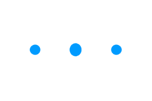
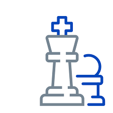

BIT Sanskrit

BIT Sanskrit aims to explore how the unique qualities of the Internet can facilitate the task of learning and teaching Sanskrit. To some extent this site is iconoclastic, for although it owes much to both traditional Sanskrit grammar and classical Western philology, it does away with both whenever they make the task of learning Sanskrit needlessly complicated.


Learning Path
Translator